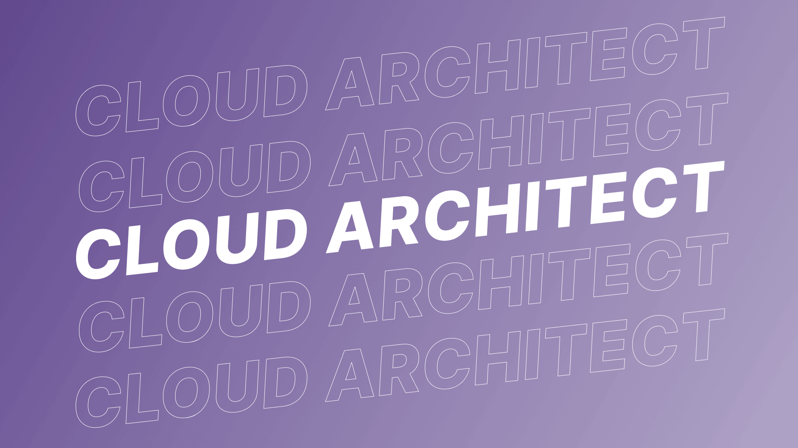

Understanding Cloud Architecture: Building for Scalability and Reliability
Cloud architecture is the backbone of modern computing, reshaping the way organizations design, deploy, and manage their IT infrastructure. In this article, we'll dive into the world of cloud architecture, exploring its core concepts, benefits, and best practices.

What Is Cloud Architecture?
At its essence, cloud architecture refers to the design and structure of cloud computing environments. These environments can include public clouds (like AWS, Azure, or Google Cloud), private clouds (managed internally by an organization), or hybrid clouds (a combination of public and private clouds).
Cloud architecture encompasses various components, such as servers, storage, databases, networking, and security measures, all optimized to work seamlessly in a cloud environment.
Key Concepts in Cloud Architecture
Scalability
Scalability is a fundamental concept in cloud architecture. It's the ability to handle increased workloads or traffic by adding resources or scaling down during periods of lower demand. This ensures that applications can perform optimally under varying conditions, maintaining a high level of availability.
Reliability
Reliability in cloud architecture is achieved through redundancy and fault tolerance. Cloud services are designed to minimize downtime by distributing resources across multiple data centers. This means that if one server or data center fails, another takes over, ensuring uninterrupted service.
Elasticity
Elasticity is closely related to scalability but emphasizes the automated provisioning and de-provisioning of resources as needed. Cloud architecture allows for the dynamic allocation of resources in real-time, responding to fluctuations in demand without manual intervention.
Multi-Tenancy
Cloud services often support multi-tenancy, meaning multiple users or organizations share the same physical infrastructure while maintaining data isolation and security. Proper design and management of multi-tenancy are critical to ensuring data privacy and compliance.
Benefits of Cloud Architecture
1. Cost Efficiency: Cloud architecture reduces upfront hardware costs and provides a pay-as-you-go model, allowing organizations to pay only for the resources they use.
2. Flexibility: Cloud resources can be easily scaled up or down, providing flexibility to adapt to changing business needs.
3. Global Reach: Cloud providers have data centers worldwide, enabling businesses to reach a global audience with low-latency services.
4. Security: Leading cloud providers invest heavily in security measures, often surpassing what many organizations can achieve on their own.
5. Disaster Recovery: Cloud architecture simplifies and enhances disaster recovery planning, with automated backups and data replication across regions.
Benefits of Cloud Architecture
1. Design for Failure: Assume that components will fail and design your architecture with redundancy and backup systems.
2. Use Managed Services: Leverage managed services for tasks like database management, which reduces administrative overhead and ensures best practices.
3. Monitor and Optimize: Implement robust monitoring to track resource utilization and costs, allowing for continuous optimization.
4. Security by Design: Embed security measures throughout your architecture, including encryption, access controls, and compliance practices.
5. Documentation: Keep thorough documentation of your architecture, making it easier to troubleshoot issues and onboard new team members.
In conclusion, cloud architecture is a cornerstone of modern IT infrastructure, offering numerous benefits in terms of scalability, reliability, and cost-efficiency. As businesses increasingly adopt cloud solutions, a deep understanding of cloud architecture becomes invaluable for IT professionals.
Whether you're an aspiring cloud architect or a seasoned professional, continued learning and staying up-to-date with cloud best practices are essential. As the cloud computing landscape evolves, so too will the opportunities and challenges in cloud architecture.